About
I'm a Machine Learning Engineer at Supersight Oy in Helsinki, Finland. I have over five years of professional software engineering experience, spanning production backend systems, data engineering, computer vision, and applied AI.
At Supersight, I've built cloud data infrastructure processing millions of time-series records daily and worked on YOLO-based model training and evaluation, including distributed training across up to 64 GPUs on the LUMI supercomputer. I also investigate agentic AI, vision-language models, and LoRA-based synthetic image generation through research prototypes.
Before specializing in ML, I developed and maintained features for more than seven customer-facing web applications using Ruby on Rails and related backend technologies. My academic work includes an Erasmus Mundus joint master's degree, research on sustained mobile inference, and a first-author publication in explainable AI.
Machine Learning Engineer | Applied AI & ML Systems
I enjoy working across the boundary between models and systems: building the infrastructure that supports machine learning, training and evaluating models, and turning technical ideas into usable software.
- Location: Helsinki, Finland
- Current role: Supersight Oy
- Focus: Computer Vision, ML Systems, Applied AI
- Education: Erasmus Mundus Joint Master's (EDISS)
- Email: iem.saad@hotmail.com
- GitHub: github.com/iem-saad
Experience & Education
My journey from software engineering to data-intensive systems, applied machine learning, and research, alongside academic experience in teaching and autonomous systems.
Professional Experience
Data & Machine Learning Engineer
Mar 2025 – Present
Supersight Oy · Helsinki, Finland
Working across data engineering, computer vision, and applied AI research, developing data infrastructure and machine learning solutions.
- Architected and deployed a production data platform on GCP, processing millions of time-series records daily using Delta Lake, Dagster, and Medallion Architecture.
- Developed Python/Django-based analytics and reporting services on top of processed datasets, supporting customer-facing applications.
- Trained and evaluated YOLO-based computer vision models on the LUMI supercomputer, scaling distributed training to 64 GPUs in parallel for large-scale person detection.
- Developed experimental LLM agents using PydanticAI, integrating tools for automated data analysis, summaries, and visualizations.
- Explored open-source vision-language models (VLMs), LLMs, LoRA fine-tuning, and synthetic image generation through research and prototyping.
Project Assistant
Oct 2024 – Apr 2025
Åbo Akademi University · Turku, Finland
Contributed to a smart boat research and development project involving collision detection, camera systems, LiDAR, and GPS-based navigation.
- Studied the autonomous system's architecture and interactions between its software components, sensors, and control functions.
- Investigated and resolved system-level software issues during development and testing.
- Automated internal boat control functions using shell scripting.
- Prepared and delivered technical demonstrations and walkthroughs for external stakeholders.
- Authored a detailed user manual documenting system operation and supporting onboarding of new project members.
Software Engineer
Oct 2020 – Jul 2024
A'sTechware · Lahore, Pakistan
Progressed from trainee to senior-level responsibilities, contributing to the development and maintenance of more than seven live, customer-facing web applications.
- Built and maintained scalable Ruby on Rails backends, REST APIs, and third-party integrations for production web applications.
- Developed features and integrations for Word of Mouth , an Australian review platform serving millions of users, working with Stripe, HubSpot CRM, Elasticsearch, Redis, and AWS S3.
- Enhanced GolfPay360 , a US-based golf course management platform, by developing application features and automating operational workflows using Ruby on Rails, JavaScript, and scheduled jobs.
- Upgraded legacy Ruby on Rails applications, maintained frontend functionality using HTML, CSS, and JavaScript, and improved application maintainability.
- Developed and maintained automated tests using RSpec, Selenium, and Capybara, alongside Docker and CI/CD workflows.
- Collaborated directly with clients to understand requirements, discuss implementation approaches, and deliver features; managed development tasks through Jira and Trello.
Teaching Assistant — Data Science
Feb 2023 – Jun 2023
FAST-NUCES · Chiniot-Faisalabad Campus, Pakistan
- Designed coursework assignments aligned with the Data Science curriculum and evaluated student submissions.
- Conducted viva voce assessments, reviewed student projects, and provided feedback on implementation and technical understanding.
- Guided student presentations and organized a project poster exhibition to showcase their work.
Teaching Assistant — Programming
Sep 2020 – Feb 2021
FAST-NUCES · Chiniot-Faisalabad Campus, Pakistan
- Designed assignments, quizzes, and practical exercises covering fundamental programming concepts and problem-solving.
- Evaluated student submissions and conducted viva voce sessions to assess understanding and implementation skills.
- Reviewed final programming projects for implementation quality and adherence to software development practices.
Education
Erasmus Mundus Joint Master's in Engineering of Data-intensive Intelligent Software Systems (EDISS)
2024 – 2026
Åbo Akademi University, Finland & Mälardalen University, Sweden
- Specialized in Industrial Machine Learning.
- Selected as one of 27 students from 464 global applicants.
- Master's thesis: An Empirical Analysis of Heterogeneous Execution for YOLO-Based Object Detection in Continuous Mobile Inference.
- Investigated CPU/GPU workload partitioning for sustained on-device object detection, examining coordination overhead and execution efficiency.
- Thesis awarded 5/5.
Bachelor of Science in Computer Science
2019 – 2023
National University of Computer and Emerging Sciences (FAST-NUCES) · Faisalabad, Pakistan
- Graduated with a 4.0/4.0 CGPA, becoming the second student in campus history to achieve this distinction.
- Awarded gold medals and recognized on the Rector's Honor List for academic excellence.
- Winner of the 7th Programmers' Battle (C++).
- Bachelor's thesis: Xavier — An Open-Source Mutation Testing Toolbox for Deep Neural Networks.
- Developed a mutation testing research toolbox using FastAPI; thesis awarded 4/4.
Projects & Research
Research, AI prototypes, production software, and earlier academic projects from my engineering journey.
- All
- ML & Research
- Agentic AI
- Web & Software
- Mobile Apps
- Academic
Heterogeneous YOLO Mobile Inference
Investigated sustained smartphone object detection using heterogeneous CPU/GPU execution. Results highlighted the importance of partitioning and coordination overhead.
XRAI: Explainable AI for Medical Segmentation
Investigated texture-based learning patterns in medical image segmentation using saliency maps and explainability techniques.
KHWARIZMI: Multi-Agent Analytics
Co-developed a four-agent prototype translating natural-language requests into SQL, visualizations and HTML reports.
Self-Healing Code: VS Code Extension
Collaborated across three European universities on Python runtime-error detection and iterative LLM-assisted fixes with validation and rollback.
Xavier: Mutation Testing for Deep Neural Networks
Built an open-source research toolbox for evaluating deep learning test suites using model mutation operators.
Word of Mouth
Contributed backend features and integrations for an Australian review platform serving millions of users.
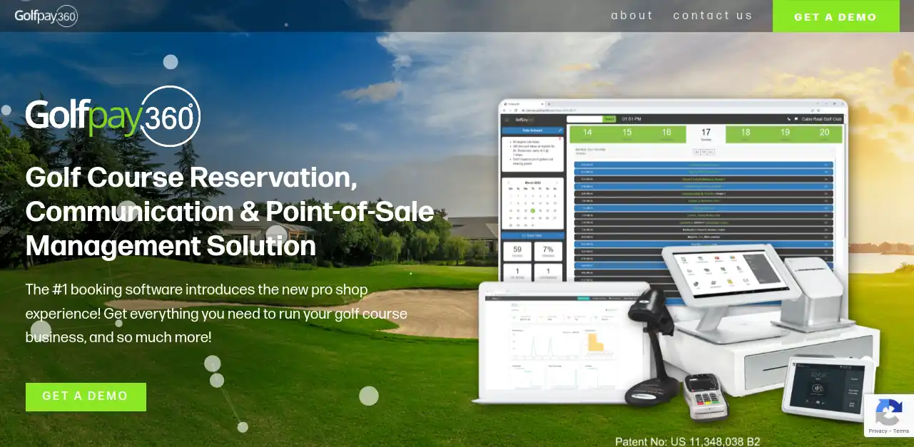

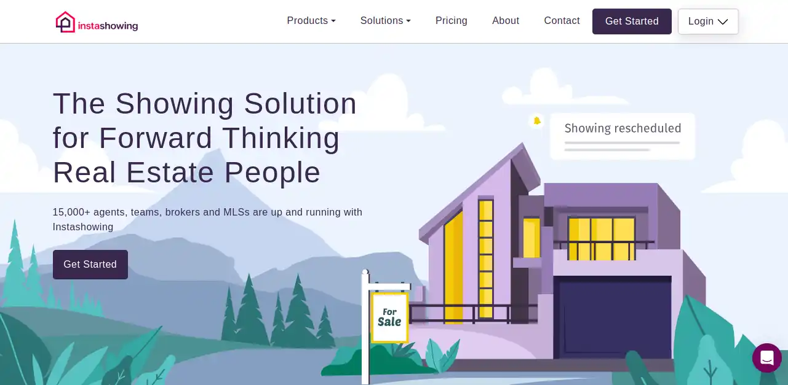

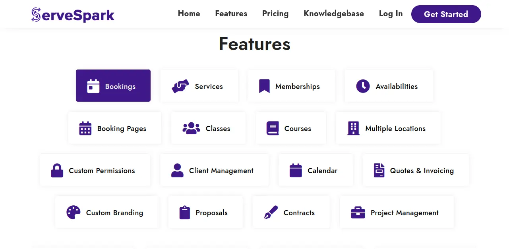

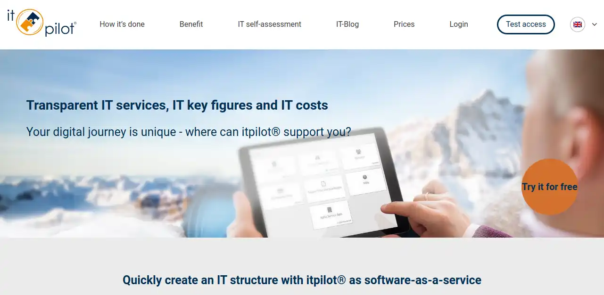

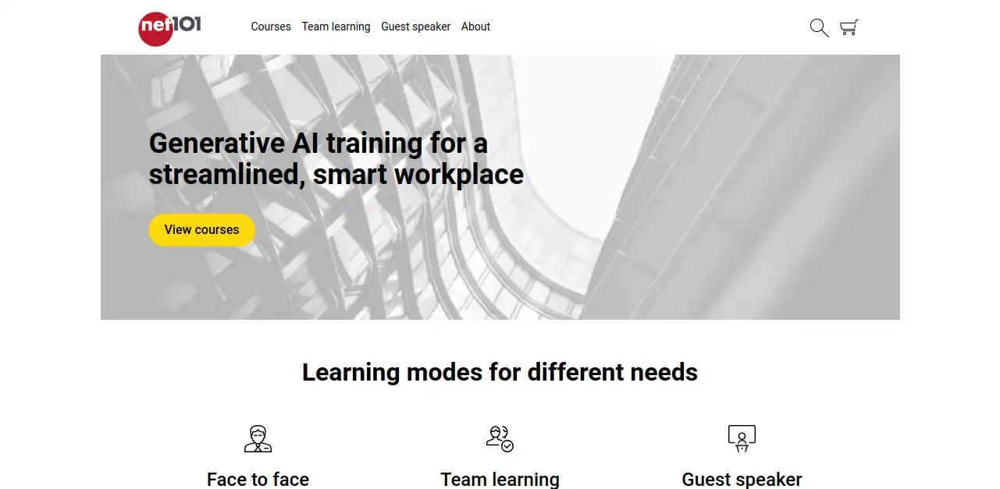

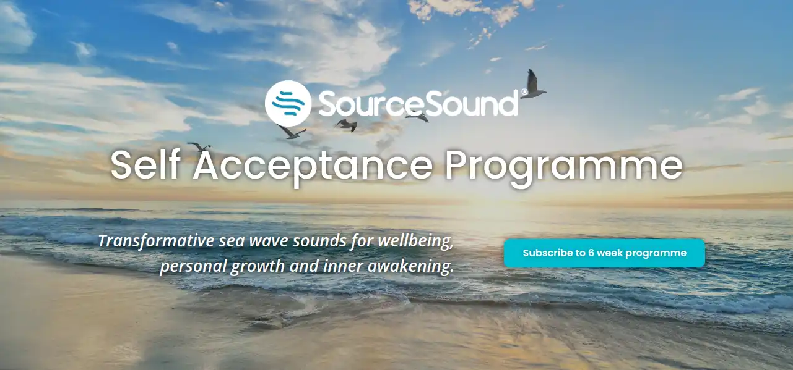

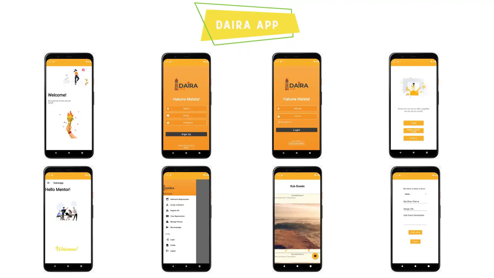


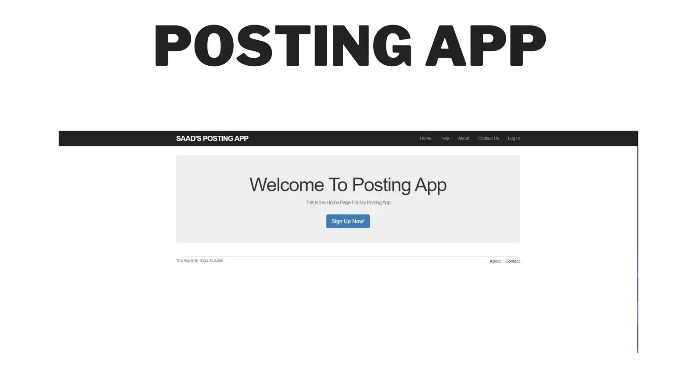

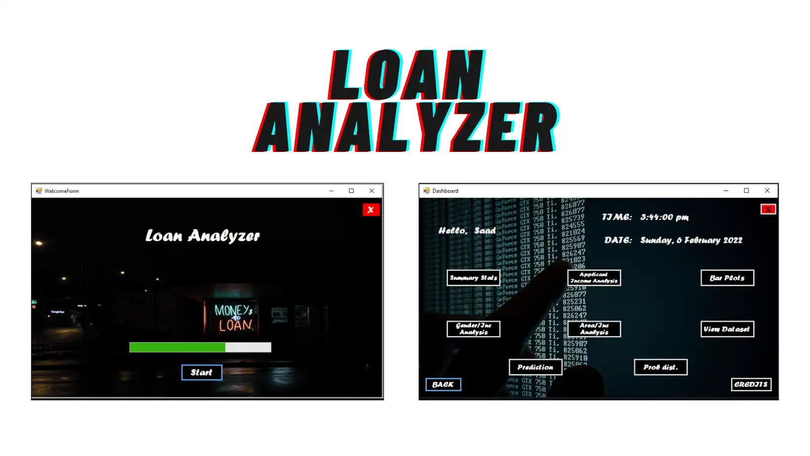

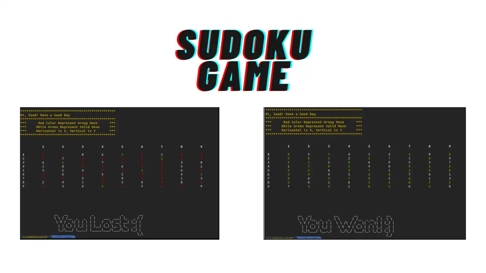

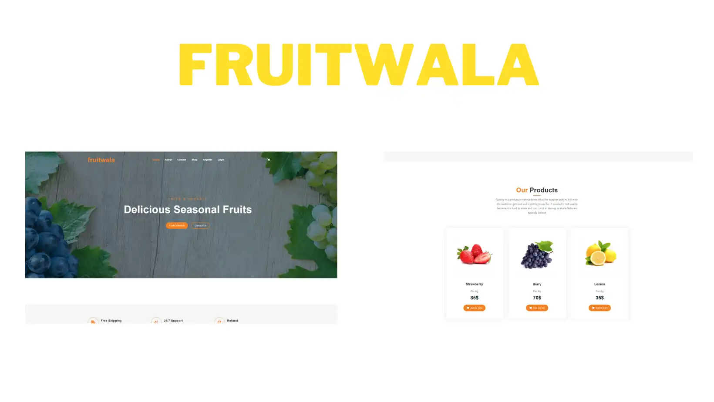

Resume
For a concise overview of my professional experience, education and selected research, see my latest resume.
Recommendations
Feedback from people I've worked with on software projects.
Contact
Interested in discussing machine learning, software engineering, research or a potential collaboration? Feel free to reach out.